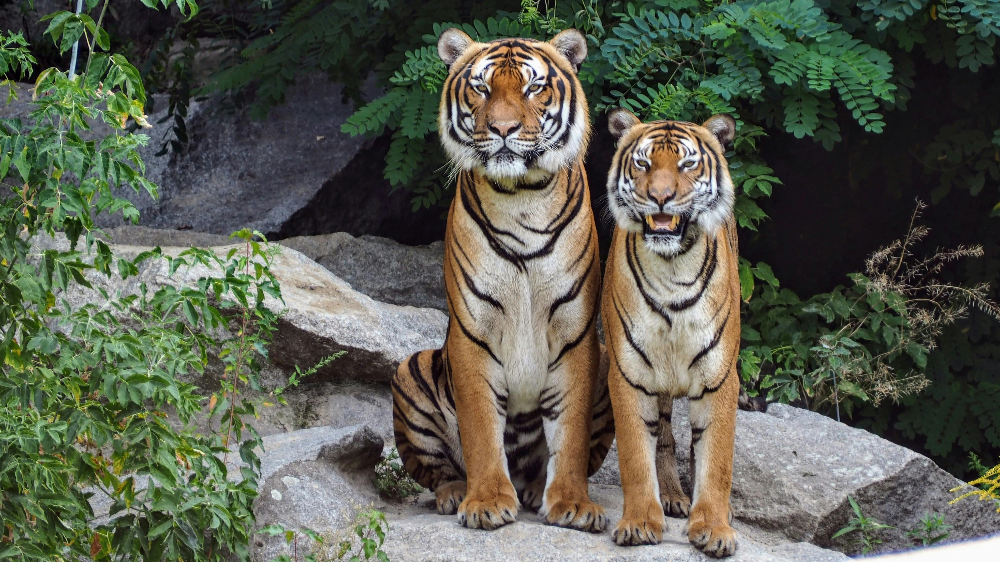

The giraffe, an extraordinary mammal, is globally celebrated as the
tallest living terrestrial animal known to humankind. These magnificent
creatures captivate observers with their unparalleled feature - the long
neck, which allows them to reach for the highest leaves on trees.
Furthermore, their distinctive coat patterns add to the allure of their
already impressive stature. In their natural habitat, the sprawling
savannas of Africa, giraffes gracefully move across the landscape,
embodying elegance and adaptability in their environment.
Tiger

The tiger stands out as the largest cat species renowned for its
striking striped fur pattern and formidable hunting abilities. These
majestic felines lead a solitary lifestyle, showcasing independence and
stealth in their hunting practices. Across diverse landscapes in Asia,
tigers carve out their territories, adapting to a range of habitats from
dense forests to grasslands, affirming their status as apex predators in
the animal kingdom.
Penguin
Penguins, the charming flightless birds, excel in cold climates, where
they display remarkable swimming skills and sustain themselves by
consuming fish and other marine life. Within the Southern Hemisphere, a
variety of penguin species inhabit diverse regions, showcasing their
adaptability to varying environments and their unique characteristics
that make them a beloved symbol of the Antarctic and surrounding areas.
Dolphin
Dolphins, the highly intelligent marine mammals, captivate with their
playful antics and remarkable communication skills. These captivating
creatures call oceans and seas worldwide their home, demonstrating their
sociable nature by forming close-knit groups known as pods. Their
intricate social structures and sophisticated behaviors underscore the
fascination and admiration they evoke in humans, making them a symbol of
marine splendor and intelligence.
Elephant
Elephants, the majestic largest land animals, are renowned for their
imposing tusks and distinctive long trunks. These herbivores thrive in a
plethora of habitats, from expansive savannas to dense forests and vast
grasslands across Africa and Asia. Their sheer size, intelligence, and
social dynamics make them an iconic symbol of wildlife and a vital
keystone species in the ecosystems they inhabit, highlighting the
importance of conservation efforts to safeguard these magnificent
creatures for future generations.
Red Panda
The red panda, a charming small mammal indigenous to the eastern
Himalayas and southwestern China, stands out with its distinctive
appearance and behaviors. Despite its name, this adorable creature is
not closely related to the giant panda. Renowned for its climbing
prowess, the red panda navigates its habitat with agility, showcasing
its arboreal skills. These delightful animals primarily sustain
themselves on a diet of bamboo, emphasizing their crucial role in the
ecosystem as bamboo consumers and contributing to the intricate balance
of their forest habitats.
Orangutan
Orangutans, the great apes hailing from the lush rainforests of
Indonesia and Malaysia, captivate with their remarkable intelligence and
adeptness at tool usage. These fascinating creatures are facing a dire
situation as they are classified as critically endangered, primarily due
to the relentless threats of habitat loss and poaching. The conservation
of orangutans is crucial not only for their own survival but also for
the preservation of the rich biodiversity of the tropical rainforests
they call home. Efforts to protect these majestic beings and their
habitats are vital to ensuring a sustainable future for orangutans and
the ecosystems they inhabit.